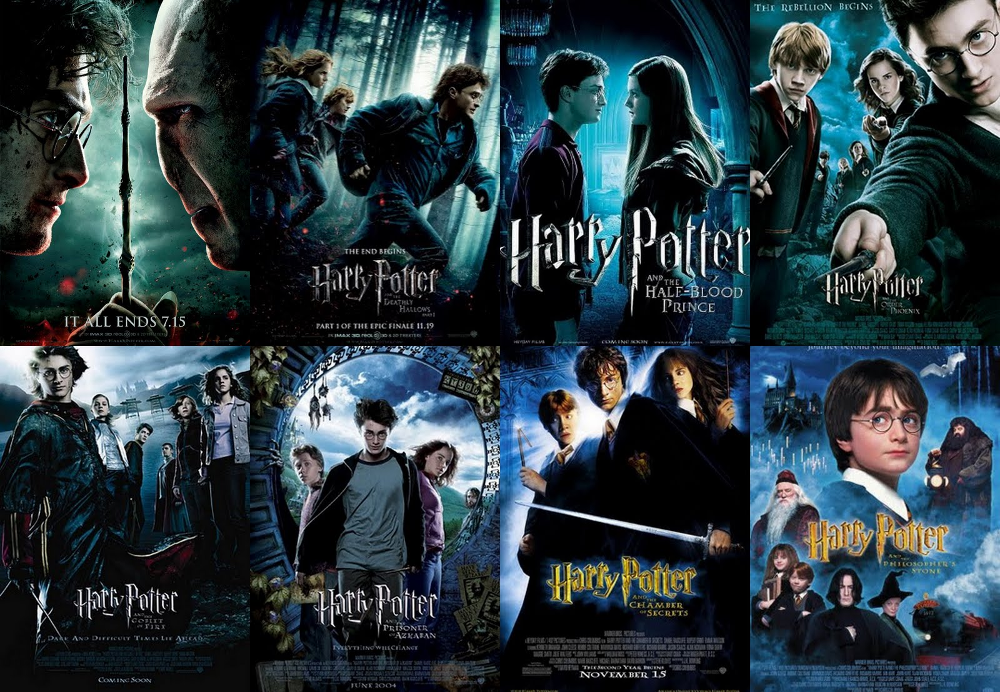

- What is 'Harry Potter'?
- A book series
- A film series
A film series

Harry Potter is a film series based on the eponymous novels by J. K. Rowling. The series is distributed by Warner Bros. and consists of eight fantasy films, beginning with Harry Potter and the Philosopher's Stone (2001) and culminating with Harry Potter and the Deathly Hallows – Part 2 (2011).
- Harry Potter and the Philosopher's Stone (2001)
- Harry Potter and the Chamber of Secrets (2002)
- Harry Potter and the Prisoner of Azkaban (2004)
- Harry Potter and the Goblet of Fire (2005)
- Harry Potter and the Order of the Phoenix (2007)
- Harry Potter and the Half-Blood Prince (2009)
- Harry Potter and the Deathly Hallows – Part 1 (2010)
- Harry Potter and the Deathly Hallows – Part 2 (2011)